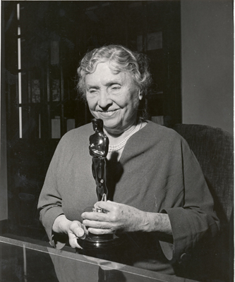
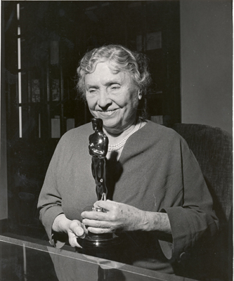

HELEN KELLER
Helen Keller, born on June 27, 1880, in Tuscumbia, Alabama, was a remarkable individual who defied the odds and became an influential figure in the face of profound challenges. At the age of 19 months, she contracted an illness, leaving her deaf and blind. However, with the guidance of her teacher, Anne Sullivan, she learned to communicate, achieved academic success, and went on to inspire countless people worldwide.
With Sullivan's help, Helen Keller made significant strides in her education. She learned to communicate through touch using the manual alphabet, which involved spelling words into her hand. Sullivan tirelessly worked with Helen, helping her make the connection between objects and their names, and gradually introducing her to more complex concepts. Keller's determination and innate intelligence, coupled with Sullivan's guidance, allowed her to learn to read Braille, write, and even speak.
Keller's achievements extended beyond academics. She became an advocate for people with disabilities, using her own experiences to raise awareness and fight for their rights. Keller championed causes such as women's suffrage, pacifism, and workers' rights, and she delivered speeches and lectures throughout her life to inspire others.
Keller's autobiography, "The Story of My Life," published in 1903, provided a powerful account of her journey and served as an inspiration to countless individuals facing their own challenges. She traveled extensively, meeting influential figures, including presidents, activists, and artists, and sharing her story to promote understanding and empathy.
Helen Keller's legacy is one of resilience, determination, and advocacy. Despite her physical limitations, she overcame adversity, obtained an education, and used her voice to bring about positive change. Her life serves as a testament to the potential within each individual and the power of perseverance. Keller's enduring impact continues to inspire generations and remind us of the strength of the human spirit.

 
